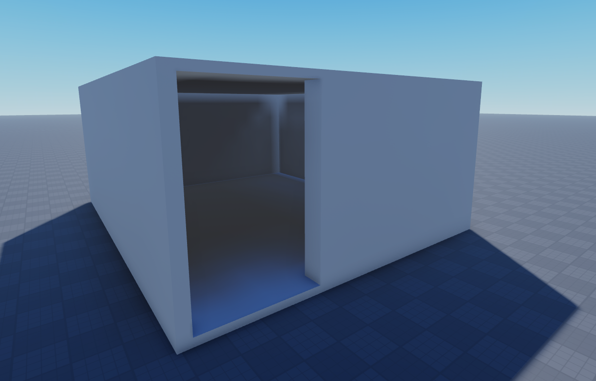
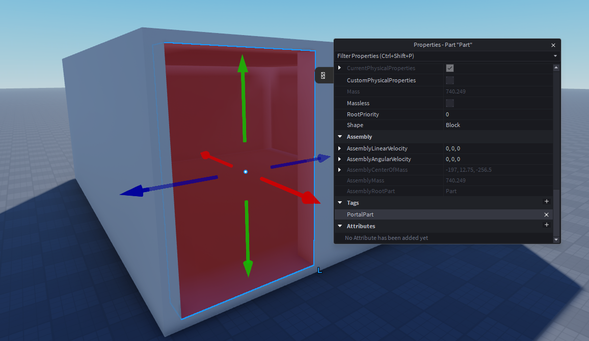
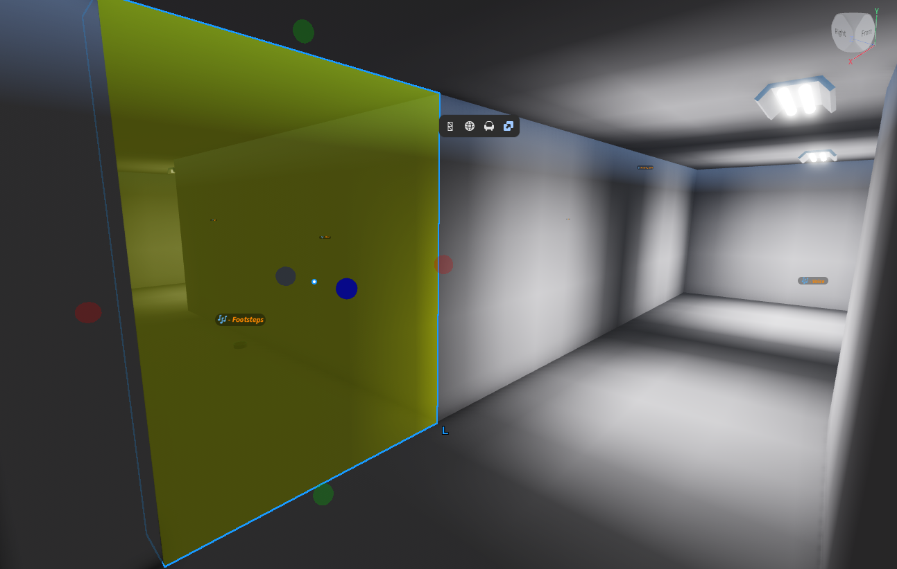

Timbre V1.0
Overview
Timbre is a library for space-aware occlusion, diffraction, and reverb within static environments. Sounds muffle behind walls, bend around corners, and reverb differently depending on the room they're in.
Timbre does not aim to simulate sound acoustics realistically or considers physical materials — instead, it aims to approximate energy loss from sound bending around corners, through doors/windows, and through open space. It tries to be relatively cheap and well tuned for individual gameplay needs.
Every sound exposes a rich set of properties that shape how it behaves — how much corners muffle it, how much bass survives a wall, how far it travels before the air swallows it, how directional it is, and how easily it leaks through closed doors. A gunshot can punch through a building while a voice may drown out behind a single door.
Timbre has two main pieces:
- Scene Editor — a Studio plugin for placing propagation nodes, configuring portals, generating reverb rooms, and testing paths.
- Runtime Module — the client-side module that runs in-game, handling all occlusion, diffraction, and reverb in real time.
Features
- Diffraction — sounds reposition to the nearest visible exit node around corners, muffled by path cost and bend angles.
- Direct Occlusion — a second "through the wall" channel that plays at the source position with muffling when the listener is close.
- Spatial Reverb — room-based reverb with per-room presets or per-node blended reverb via inverse-distance weighting.
- Volumetric Audio — sounds that emit from the entire surface of a part (boxes, spheres, cylinders) rather than a single point.
- Ambient Sounds — omnidirectional outdoor sounds that automatically diffract through portals when the listener is inside.
- Dynamic Portals — doors, windows, and other openings can be toggled at runtime with configurable cost and muffle penalties.
- Portal Edge-Sliding — sized portals slide the emitter toward where the sound is actually coming from, instead of dead-center in the doorway.
- Instance Pooling — pre-allocated audio graph slots avoid runtime Instance creation.
- Frame Budgets — all expensive work (raycasts, diffraction, reverb) is budgeted per-frame with staggering and priority sorting.
- Sound Profiles — reusable parameter presets.
- Concurrency Groups — automatic voice limiting per category (for things like humming lights where there might be many in one area).
How It Works
Before diving into the editor, here's the core idea. Timbre uses a graph of propagation nodes placed around your map — at wall corners, doorways, and openings. When a sound plays, Timbre figures out how it reaches the listener by checking which nodes each side can "see," then finding the cheapest path through the graph.
The sound gets repositioned to the exit node closest to the listener and muffled based on how far the path traveled and how many corners it bent around. If the listener has a direct line of sight to the source, the sound just plays normally — no diffraction needed.
The key thing to understand: the path always exists through the node graph. Closing a portal doesn't remove the path — it just makes it more expensive and muffled. Try dragging the listener into the dead zone nook at the bottom-right of Room B — that's what happens when a corner is missing its node.
Understanding Tags
Timbre uses two tags to understand your map's geometry.
Border Tag (default: "RoomBorderPart")
Tag your walls, floors, and ceilings — any part that physically separates spaces. Border-tagged parts do two things:
- Block node visibility. When Timbre raycasts from the listener (or a sound source) to find nearby propagation nodes, border parts stop the ray. If a wall is between you and a node, you can't "see" it, and no sound path can start or end there from your side.
- Block direct line of sight. When Timbre checks whether the source is directly visible to the listener, border parts block that check too — which is what triggers the diffraction system in the first place.
Portal Tag (default: "PortalPart")
Tag your doors, windows, and opening parts. Portal-tagged parts behave differently from borders in one critical way:
- They do NOT block node visibility. Timbre's sight rays pass right through portal parts as if they aren't there. This is what allows the node graph to always "see through" a doorway — even when there's a physical door there — so sound paths can route through closed doors.
- They DO block direct line of sight. A closed door still registers as an obstruction between the listener and the source, so the diffraction system kicks in and the sound gets properly routed and muffled through the graph.
Every position a player can reach must have unobstructed line-of-sight to at least one propagation node — meaning no border-tagged parts blocking the way. If a player is somewhere with every nearby node hidden behind walls, Timbre can't build any path and the player won't hear sounds at all.
After placing nodes, walk through your map and ask: "from here, can I see at least one node without a border-tagged wall in the way?" The Test Path mode in the editor is your best friend for catching dead spots.
Essential Scene Setup
Make sure you've read How It Works — it covers how propagation nodes, tags, and visibility work together, and why full node coverage is important.
Set Up Openings
Before placing nodes, it's worth setting up parts at the openings into your rooms — doors, windows, archways, and so on. Even if an opening has no physical door or window, you'll probably want a part there. A fully transparent part works fine — it just needs to exist and be tagged.


Even if you're not using reverb rooms, having parts at openings means you can support ambient sounds — wind, rain, and other outdoor audio that diffracts through portals when the listener is inside. Without an opening part, Timbre has no portal to route that sound through.
Opening parts also help with:
- Letting the reverb system distinguish enclosed rooms from outdoor spaces, if you choose to use it.
- Giving you control over room splitting — place opening parts anywhere you want to divide a large space into multiple rooms, so you can set different reverb presets in each area.
Load / Unload Map
Select a Model or Folder in the Explorer that represents your map, then click Load from Selection. All node data, baked paths, and reverb room data will be stored as attributes on it.
On first load the editor creates a TIMBRE_DATA folder containing an invisible, non-colliding RootPart placed at the map's bounding-box center. All baked data is stored relative to it, so the map can be moved or cloned and everything follows. Don't delete it.

Create Nodes
Switch to the Nodes tab and place propagation nodes throughout your map. Placement modes:
- Corner Nodes (default) — automatically places nodes along vertical wall edges.
- Free Place — uncheck "Corner Node" to place freely.
- Portal Nodes — uncheck "Corner Node" and check "Portal" for dynamic openings.

Portal Nodes
Portal Nodes can be opened or closed at runtime — doors, breakable windows, shutters, gates. When closed, they add a configurable cost and muffle penalty to paths.
Connect & Bake
Switch to Connect Nodes mode. Click and drag between nodes to create connections. You can also automatically generate connections here. When ready, click Bake All Connections to precompute optimal paths.
Portal Costs
In Portals mode, configure each portal's closed behavior:

- Portal Cost — pathfinding penalty when closed (in studs, 0–9999).
- Portal Muffle — EQ attenuation when sound passes through (0–1).
- Window — Cost:
25, Muffle:0.25 - Door — Cost:
50, Muffle:0.50
The pathfinder prefers the window when both are closed, and sound through it stays clearer.
Portal Sizes
By default, an occluded sound exits through the center of its portal node. Portal Sizes fix this — give a portal the dimensions of its opening, and Timbre slides the emitter along the portal's plane toward where the sound is actually coming from.

- In Portals mode, enter Portal Width and Portal Height in studs.
- Hover over a portal node to preview, click to apply.
Sizes default to 0 × 0 (disabled).

Test Paths
In Test Path mode, click to place a source and listener. The editor visualizes the best path with cost/angle breakdowns. Click portals to toggle open/closed.

Reverb Rooms
The Room Editor lets you auto-generate reverb rooms from your map geometry, then configure reverb properties for each room.
Generate Rooms

Configure two tags that describe your map's geometry:
- Border Tag — walls, ceilings, floors — everything that blocks sound.
- Portal Tag — door/window parts (the opening parts you set up in Step 1).
A part must only have one tag — never both. The tag names must be different.
Click Update Rooms to auto-generate room volumes. If rooms didn't generate correctly, use Register from Selection with a model containing submodels of room volumes.
Manual Room Splitting
To split large spaces into multiple rooms, create temporary blocker parts tagged with your border tag, run Update Rooms, then delete the blockers — the room data is already baked.

Configure Rooms

Each room supports three reverb modes:
- None — no reverb.
- Preset — a single reverb preset applied uniformly.
- Blend Nodes — multiple presets blended by inverse-distance weighting.
Presets
The Presets tab is where you create reverb presets — full AudioReverb properties plus optional Room Tone settings for EQ coloring.

- BrightnessLow / BrightnessHigh — bass/treble boost (above 1) or cut (below 1).
- MeanFreePath — avg. distance before a reflection (studs). Small rooms = low.
- Enclosure — how enclosed the space feels (0–1). Higher = stronger EQ effect.
- Strength — overall room tone multiplier (default 1).
Preview Sounds
The Preview tab lets you hear reverb rooms in Studio. Paste an audio asset ID, hit play, and check Live Preview to update as you move.

Runtime Setup
Require the module and follow these steps to get Timbre running in-game.
local Timbre = require(path.to.TimbrePackage.Timbre)1 — Set Tags
Tell Timbre which tagged parts make up your world geometry.
function Timbre:SetOcclusionTags(occlusionPartTag: string, portalPartTag: string, dynamicPartTag: string?)Timbre:SetOcclusionTags("RoomBorderPart", "PortalPart", "PortalPart")| Parameter | Type | Description |
|---|---|---|
| occlusionPartTag | string | Tag for static parts that block sound — walls, floors, ceilings. |
| portalPartTag | string | Tag for portal parts — doors, windows. Included in occlusion filter but treated specially. |
| dynamicPartTag | string? | Optional tag for parts that move at runtime (sliding doors). Timbre tracks CFrame/CanCollide changes each frame. |
2 — Start
Start the runtime. Creates the instance pool, loads Sound Profiles and Concurrency Groups, and begins per-frame update loops.
Timbre:Start()Timbre:Start() after setting tags, before attaching sounds.3 — Load Map
Load the map model you authored in the editor. Timbre reads baked propagation data and reverb room data from its attributes.
local LoadedMap = Timbre:LoadMap(workspace:WaitForChild("Map"))
-- Later, when switching maps:
Timbre:UnloadMap()4 — Portal Events
Toggle a portal node's state at runtime. Timbre finds the closest portal node to the given position and updates it.
function Timbre:SetPortalNodeState(position: Vector3, open: boolean)LoadedMap:ObserveTag() watches for tagged instances within your map and cleans up automatically when the map is unloaded:
LoadedMap:ObserveTag("Door", function(newDoor)
local doorOpen = newDoor:WaitForChild("Open")
local doorPos = newDoor:GetPivot().Position
Timbre:SetPortalNodeState(doorPos, doorOpen.Value)
local conn = doorOpen:GetPropertyChangedSignal("Value"):Connect(function()
Timbre:SetPortalNodeState(doorPos, doorOpen.Value)
end)
return function() conn:Disconnect() end
end)5 — Set Listener
Override the default camera listener with a custom part or attachment.
function Timbre:SetListener(listener: (Attachment | PVInstance)?)Pass nil to revert to the camera. If the listener is destroyed, Timbre auto-reverts.
Timbre:SetListener(character.Head) -- Use head as listener
Timbre:SetListener(nil) -- Revert to cameraPlaying Audio
Timbre works with AudioPlayer instances from Roblox's audio API — not the legacy Sound object. Create a TimbrePlayer, Attach it to speaker(s), and Timbre handles the rest.
Dual-Channel Architecture
Each attached sound gets two channels:
- Direct Channel (optional per sound) — emitter at the source position. When occluded, applies "through the wall" muffling while keeping the emitter at the true location.
- Diffraction Channel — emitter at a virtual position computed from the best propagation path. The sound appears to come from the nearest visible exit point around obstacles.
If you don't want repositioned audio, but just want the environment to muffle sounds, you can simply turn it off in the settings.
CreatePlayer
Create a TimbrePlayer wrapping an AudioPlayer. Multiple speakers can be attached to the same player — all share the same audio source and play in sync.
function Timbre:CreatePlayer(audioPlayer: AudioPlayer): TimbrePlayerThe TimbrePlayer is automatically destroyed when the AudioPlayer is destroyed.
local audioPlayer = Instance.new("AudioPlayer")
audioPlayer.Parent = workspace
local player = Timbre:CreatePlayer(audioPlayer)Attach
Attach a speaker to a TimbrePlayer. The speaker's position determines where the sound is heard from.
function TimbrePlayer:Attach(speaker: Attachment | BasePart, params: {[string]: any}?, category: string?, identifier: string?): SoundObject| Parameter | Type | Description |
|---|---|---|
| speaker | Attachment | BasePart | The part or attachment that determines the sound's world position. |
| params | {[string]: any}? | Optional sound parameters. |
| category | string? | Groups the sound in the debug explorer. |
| identifier | string? | Display name in the debug explorer. |
local soundObj = player:Attach(speakerPart, {
MinDistance = 10,
MaxDistance = 80,
Profile = "Footsteps",
}, "CharacterSounds", "Footstep")Creating and destroying AudioPlayers frequently is wasteful and might lead to strange behavior. Create them ahead of time and reuse them — e.g. for footsteps, create one AudioPlayer per foot, attach once, then swap .Asset and call :Play() on each cue.
soundObj:SetParam("MaxMuffle", 0.5) — see the API Reference.Detach
function TimbrePlayer:Detach(soundObj: SoundObject, fadeOutDuration: number?, onComplete: (() -> ())?)function TimbrePlayer:DetachAll(fadeOutDuration: number?, onComplete: (() -> ())?)-- Immediate detach
player:Detach(soundObj)
-- Fade out over 1 second
player:Detach(soundObj, 1, function()
print("Fade complete")
end)
-- Detach everything
player:DetachAll()Sound Profiles
Sound Profiles define reusable parameter presets. Create a folder tagged #TimbreSoundProfiles in your game with a SoundProfiles subfolder containing named profile folders. Each profile folder holds ValueBase children matching parameter keys.

Parameters resolve in a three-tier chain: explicit params → Sound Profile → built-in defaults.
Add a ConcurrencyGroups subfolder with named group folders each containing a MaxConcurrent IntValue. Sounds with a matching ConcurrencyGroup param are auto-silenced when the limit is exceeded — closest sounds to the listener are kept.
Volumetric Audio
Standard Attach treats a sound as a single point in space. AttachVolumetric makes a sound emit from the entire surface of a BasePart — ideal for large sound sources like waterfalls, bonfires, machinery, or ambient hum from a generator.
Volumetric audio can be a bit more expensive, which shouldn't slow down your games as everything is frame-budgeted, but might lead to delayed audio updates. Be sure to test everything first to make sure it's running nicely.
How It Works
Timbre samples the speaker BasePart's surface and finds the nearest point on that surface to the listener. The direct channel emitter tracks this point, so the sound always appears to come from the closest edge of the object rather than its center. Occlusion checks are amortized across frames — each frame, a budget of raycasts tests surface points for visibility, with early exit as soon as a visible point is found.
When the listener is inside the volume, the sound plays at full volume with no distance attenuation — you're surrounded by the source.
AttachVolumetric
function TimbrePlayer:AttachVolumetric(speaker: BasePart, volumetricParams: { shape: string?, spacing: number? }?, params: {[string]: any}?, category: string?, identifier: string?): SoundObject| Parameter | Type | Description |
|---|---|---|
| speaker | BasePart | The part that defines both position and emission volume. |
| volumetricParams | table? | Shape and spacing configuration. |
| params | {[string]: any}? | Optional sound parameters. |
| category | string? | Debug explorer category. |
| identifier | string? | Debug explorer display name. |
Volumetric Params
| Key | Default | Description |
|---|---|---|
| shape | auto | "Box", "Sphere", or "Cylinder". Auto-detects from Part.Shape if omitted. |
| spacing | auto | Distance between surface sample points in studs. Auto-calculated from part size if omitted. |
Shapes
- Box
- Sphere
- Cylinder
Example
local waterfall = workspace.Waterfall
local player = Timbre:CreatePlayer(audioPlayer)
player:AttachVolumetric(waterfall, {
shape = "Box",
spacing = 8,
}, {
MinDistance = 20,
MaxDistance = 200,
SoundAngleSensitivity = 0.3,
}, "Environment", "Waterfall")Volumetric occlusion is budgeted per-frame by VOLUMETRIC_OCCLUSION_MAX_RAYCASTS (default 64). Visible volumes early-exit immediately. Only fully-occluded volumes use the full budget, spread across multiple frames.
Ambient Sounds
Ambient sounds represent environmental audio that's omnipresent when outdoors — wind, rain, distant traffic, birdsong. When the listener is outside, the sound plays at full volume right in front of the camera. When the listener moves inside, the sound diffracts through the nearest outside-facing portal, getting muffled and attenuated just like any other sound traveling through the propagation graph.
Requirements
Ambient sounds need a way to know what "outside" means. This requires either:
- SpatialReverb with an "Outside" room defined, or
- A custom outside callback via
Timbre:RegisterCustomOutsideCallback().
The system automatically detects which portal nodes face outside by probing both sides of each portal using whichever detection method is available.
CreateAmbientSound
function Timbre:CreateAmbientSound(audioPlayer: AudioPlayer, params: {[string]: any}?, category: string?, identifier: string?): AmbientSoundObject?Returns nil with a warning if no outside detection is available.
| Parameter | Type | Description |
|---|---|---|
| audioPlayer | AudioPlayer | The AudioPlayer for the ambient sound. Automatically cleaned up when destroyed. |
| params | {[string]: any}? | Sound parameters. OutsideVolume and InsideVolume are especially relevant here. |
| category | string? | Debug category (defaults to "Ambient"). |
| identifier | string? | Debug display name. |
Ambient-Specific Parameters
| Parameter | Default | Description |
|---|---|---|
| OutsideVolume | 1 | Volume when the listener is outside (0–1). |
| InsideVolume | 0.5 | Volume multiplier when the listener is inside (0–1). Fades smoothly when entering/leaving. |
DestroyAmbientSound
function Timbre:DestroyAmbientSound(ambientObj: AmbientSoundObject, fadeOutDuration: number?, onComplete: (() -> ())?)Custom Outside Callback
If you don't use SpatialReverb rooms, register your own outside detection:
function Timbre:RegisterCustomOutsideCallback(callback: (Vector3) -> boolean)Timbre:RegisterCustomOutsideCallback(function(position)
return position.Y > 100 -- above Y=100 is "outside"
end)Example
local windPlayer = Instance.new("AudioPlayer")
windPlayer.Asset = "rbxassetid://12345"
windPlayer.Looping = true
windPlayer.Parent = workspace
local wind = Timbre:CreateAmbientSound(windPlayer, {
OutsideVolume = 0.8,
InsideVolume = 0.3,
MaxDistance = 200,
SoundAngleSensitivity = 0.4,
PortalSensitivity = 1,
}, "Ambient", "Wind")
windPlayer:Play()When a map is loaded, Timbre probes each portal node along ±LookVector in small steps. If any probe point is detected as "outside" by either SpatialReverb or your custom callback, that portal is marked as outside-facing. This is computed once per map load.
API Reference
Public Timbre API
Lifecycle
Timbre:SetOcclusionTags
function Timbre:SetOcclusionTags(occlusionPartTag: string, portalPartTag: string, dynamicPartTag: string?)Tells Timbre which tagged parts block sound, which are portals, and (optionally) which move at runtime.
Timbre:SetOcclusionTags("RoomBorderPart", "PortalPart", "PortalPart")Timbre:Start
function Timbre:Start()Starts the runtime — creates the instance pool, loads Sound Profiles and Concurrency Groups, begins update loops. Call once, after setting tags.
Timbre:Start()Timbre:LoadMap / Timbre:UnloadMap
function Timbre:LoadMap(map: Model | Folder): LoadedMapfunction Timbre:UnloadMap()Loads baked propagation and reverb data from a map authored in the editor. Loading a new map over an existing one unloads it first.
local LoadedMap = Timbre:LoadMap(workspace:WaitForChild("Map"))
-- later:
Timbre:UnloadMap()Timbre:SetListener
function Timbre:SetListener(listener: (Attachment | PVInstance)?)Overrides the default camera listener. Pass nil to revert; auto-reverts if the listener is destroyed.
Timbre:SetListener(character.Head)
Timbre:SetListener(nil) -- back to cameraPlaying Sounds
Timbre:CreatePlayer
function Timbre:CreatePlayer(audioPlayer: AudioPlayer): TimbrePlayerWraps an AudioPlayer. Multiple speakers can attach to one player — all share the source and play in sync. Destroyed automatically with the AudioPlayer.
local player = Timbre:CreatePlayer(audioPlayer)TimbrePlayer:Attach
function TimbrePlayer:Attach(speaker: Attachment | BasePart, params: {[string]: any}?, category: string?, identifier: string?): SoundObjectAttaches a point-source speaker. Cleaned up automatically when the speaker is destroyed. See Sound Parameters for the params table.
local soundObj = player:Attach(speakerPart, {
MaxDistance = 80,
Profile = "Footsteps",
}, "SFX", "Footstep")TimbrePlayer:AttachVolumetric
function TimbrePlayer:AttachVolumetric(speaker: BasePart, volumetricParams: {shape: string?, spacing: number?}?, params: {[string]: any}?, category: string?, identifier: string?): SoundObjectSound emits from the entire surface of the part instead of a single point — see Volumetric Audio.
local river = player:AttachVolumetric(riverPart, {shape = "Box", spacing = 8 })TimbrePlayer:Detach / DetachAll / Destroy
function TimbrePlayer:Detach(soundObj: SoundObject, fadeOutDuration: number?, onComplete: (() -> ())?)function TimbrePlayer:DetachAll(fadeOutDuration: number?, onComplete: (() -> ())?)function TimbrePlayer:Destroy()Destroy immediately detaches everything and is called automatically when the AudioPlayer is destroyed.
player:Detach(soundObj, 1, function() print("faded out") end)SoundObject:SetParam
function SoundObject:SetParam(name: string, value: any): booleanUpdates a sound parameter at runtime. Pass nil to clear an explicit override and fall back to the profile/default value. Distance parameters regenerate the attenuation envelope; everything else applies on the next update. Works on ambient sounds too (which additionally accept OutsideVolume/InsideVolume). Returns false with a warning for unknown keys and for Profile, ReferenceEmitter, and Compressor, which are baked at attach.
soundObj:SetParam("MaxDistance", 120)
soundObj:SetParam("MaxMuffle", nil) -- back to profile/defaultSoundObject.AudibilityChanged
SoundObject.AudibilityChanged: Signal<muffle: number, volume: number>Fires when the sound's computed audibility changes meaningfully. muffle is 0–1 (0 = clear line of sight, 1 = fully blocked); volume is the 0–1 loudness target from distance/path attenuation and portal damping, before smoothing and the AudioPlayer's own Volume. Debounced to ≥0.05 changes, but the volume == 0 edge always fires exactly — reliable for virtualization. Connections are cleaned up automatically on detach. Exists on ambient sounds too.
soundObj.AudibilityChanged:Connect(function(muffle, volume)
fireParticles.Enabled = volume > 0 -- pause FX nobody can hear
end)Ambient Sounds
Timbre:CreateAmbientSound
function Timbre:CreateAmbientSound(audioPlayer: AudioPlayer, params: {[string]: any}?, category: string?, identifier: string?): AmbientSoundObject?Omnidirectional when the listener is outside, diffracts through the nearest outside-facing portal when inside. Returns nil with a warning if no outside detection is available — see Ambient Sounds.
local wind = Timbre:CreateAmbientSound(windPlayer, {
OutsideVolume = 0.8, InsideVolume = 0.3,
})Timbre:DestroyAmbientSound
function Timbre:DestroyAmbientSound(ambientObj: AmbientSoundObject, fadeOutDuration: number?, onComplete: (() -> ())?)Timbre:DestroyAmbientSound(wind, 2)Timbre:RegisterCustomOutsideCallback
function Timbre:RegisterCustomOutsideCallback(callback: (Vector3) -> boolean)Your own "is this position outside?" check, used when you're not using Timbre's reverb rooms
Timbre:RegisterCustomOutsideCallback(function(position)
return position.Y > 100
end)Rooms & Portals
Timbre:GetRoomAt
function Timbre:GetRoomAt(position: Vector3): {Name: string, IsOutside: boolean}?The SpatialReverb room at a world position. Positions outside every room box resolve to the Outside room when one is defined; nil when no room data is loaded.
local room = Timbre:GetRoomAt(npc.Position)
if room and room.Name == "Cave" then ... endTimbre:GetListenerRoom
function Timbre:GetListenerRoom(): {Name: string, IsOutside: boolean}?The listener's current room — the same sticky value ListenerRoomChanged reports. Use it to read the initial state when connecting to the signal.
local room = Timbre:GetListenerRoom()Timbre:SetPortalNodeState
function Timbre:SetPortalNodeState(position: Vector3, open: boolean)Finds the closest portal node to the position and opens/closes it.
Timbre:SetPortalNodeState(door:GetPivot().Position, false)Signals
Timbre.ListenerRoomChanged
Timbre.ListenerRoomChanged: Signal<newRoom: RoomInfo?, oldRoom: RoomInfo?>Fires when the listener moves between reverb rooms, with {Name, IsOutside} descriptors. Transitions to/from outdoors report the Outside room. Uses the same sticky room result as reverb, so brief wall-clip glitches don't fire spurious changes.
Timbre.ListenerRoomChanged:Connect(function(newRoom, oldRoom)
MusicSystem:SetZone(newRoom and newRoom.Name)
end)Timbre.MapLoaded / Timbre.MapUnloaded
Timbre.MapLoaded: Signal<map: Instance>Timbre.MapUnloaded: Signal<map: Instance>MapLoaded fires after LoadMap finishes. MapUnloaded fires with the previous map — both from UnloadMap and when LoadMap replaces an already loaded map.
Timbre.MapLoaded:Connect(function(map)
AmbienceManager:Begin(map)
end)Timbre.SoundAttached / Timbre.SoundDetached
Timbre.SoundAttached: Signal<soundObj>Timbre.SoundDetached: Signal<soundObj>Fire for every sound entering or leaving the system — point, volumetric, simple, and ambient. SoundDetached fires on final removal, i.e. after any fade-out completes. Useful for captions, ducking/mixer layers, and debug tooling.
Timbre.SoundAttached:Connect(function(soundObj)
activeCount += 1
end)Settings
Timbre:SetGlobalSetting
function Timbre:SetGlobalSetting(name: string, value: any): booleanChanges a global setting at runtime. Most are read every frame and apply immediately. Type-checked against the current value. Returns false with a warning for unknown names and for settings consumed at a fixed point: DEBUG and UseProvidedListener always; POOL_ENABLED/POOL_TARGET_COUNT after Start(); USE_CUSTOM_RAYCAST after a map is loaded.
Timbre:SetGlobalSetting("EQ_SMOOTHING_SPEED", 0.4)
Timbre:SetGlobalSetting("STAGGER_MAX_DIFFRACTION_PER_FRAME", 8)Utilities
LoadedMap:ObserveTag
function LoadedMap:ObserveTag(tagName: string, callback: (Instance) -> (() -> ())?)Watches for tagged instances inside the loaded map. The callback can return a cleanup function, which runs when the instance loses the tag, is destroyed, or the map is unloaded.
LoadedMap:ObserveTag("Door", function(door)
-- wire up the door...
return function() --[[ cleanup ]] end
end)Sound Parameters
Per-sound settings passed into the params table when calling Attach(), AttachVolumetric(), or CreateAmbientSound(). Can also be defined in a Sound Profile.
Distance & Rolloff
| Parameter | Default | Description |
|---|---|---|
| MinDistance | 10 | Distance (studs) at which attenuation begins. |
| MaxDistance | 150 | Distance (studs) at which the sound is silent. |
| RollOffMode | InverseTapered | Distance attenuation curve — Linear, Inverse, InverseTapered, or InverseSquare. |
| ReferenceEmitter | nil | An AudioEmitter whose custom distance/angle attenuation curves are copied. |
Diffraction
| Parameter | Default | Description |
|---|---|---|
| SoundAngleSensitivity | 0.5 | How much bends muffle the sound. |
| SoundBassRetention | 1 | How much bass survives muffling (0–1). |
| AirAbsorptionEnabled | false | Whether long paths muffle from distance alone. |
| Diffraction_AirAbsorptionMinDistance | 0 | Distance (studs) before air absorption starts. |
| IncludeEntryAngle | true | Include source-to-first-node angle in bend cost. |
| SoundDirectivity | 0 | How directional the source is (0–1). |
| MaxMuffle | 40 | Maximum EQ attenuation in dB. |
Direct Occlusion
| Parameter | Default | Description |
|---|---|---|
| DirectOcclusionStrength | 1 | Multiplier on direct channel muffling. |
| DirectOcclusionActivationDistance | nil | Distance within which the direct channel activates. nil = disabled. |
| DirectOcclusionAudibleDistance | nil | Distance within which direct is at full volume. |
Portals
| Parameter | Default | Description |
|---|---|---|
| PortalSensitivity | 1 | Scales portal muffle effectiveness (0–1). |
| PortalDamping | 0 | Volume reduction per unit of portal muffle (0–1). |
Ambient
| Parameter | Default | Description |
|---|---|---|
| OutsideVolume | 1 | Volume when the listener is outside (0–1). |
| InsideVolume | 0.5 | Volume multiplier when the listener is inside (0–1). |
Convenience
| Parameter | Default | Description |
|---|---|---|
| Volume | nil | If set, applies to AudioPlayer.Volume on attach. |
| Pitch | nil | If set, applies to AudioPlayer.PlaybackSpeed on attach. |
| Profile | nil | Name of a Sound Profile to inherit defaults from. |
| ConcurrencyGroup | nil | Name of a concurrency group for voice limiting. |
Examples
{ MinDistance = 40, MaxDistance = 300,
SoundAngleSensitivity = 0.2, SoundBassRetention = 1, SoundDirectivity = 0,
AirAbsorptionEnabled = true, Diffraction_AirAbsorptionMinDistance = 200,
IncludeEntryAngle = false, MaxMuffle = 40,
PortalSensitivity = 0.5, PortalDamping = 0 }{ MinDistance = 10, MaxDistance = 150,
SoundAngleSensitivity = 0.5, SoundBassRetention = 0.5, SoundDirectivity = 1,
AirAbsorptionEnabled = true, Diffraction_AirAbsorptionMinDistance = 40,
IncludeEntryAngle = true, MaxMuffle = 80,
PortalSensitivity = 1, PortalDamping = 1 }Global Settings
System-wide settings in TimbreSettings. Can be tweaked live via the debug window, or from code with Timbre:SetGlobalSetting() — see the API Reference. A few settings are consumed once (pool creation, raycast world model) and can't be changed after that point.
Audio
| Setting | Default | Description |
|---|---|---|
| REPOSITIONED_AUDIO | true | Whether occluded sounds reposition to the diffraction exit point. |
| MAX_PATH_COST_SPREAD | 10.5 | Max cost difference for secondary paths to be blended in. |
| BEND_ANGLE_PENALTY | 0.15 | Extra muffle per path bend. |
| DEFAULT_PORTAL_MUFFLE | 0.5 | Fallback muffle per portal without authored values. |
| SKIP_PATH_BLENDING | false | Use only the best path — no blending. |
| EQ_SMOOTHING_SPEED | 0.2 | Muffling EQ interpolation speed. |
| POSITION_LERP_SPEED | 0.2 | Diffracted emitter position interpolation speed. |
| FADER_SPEED | 1 | Channel fader interpolation speed. |
| REVERB_MUFFLE_SPEED | 0.1 | Shadow EQ tracking speed for inactive channels. |
| DIRECT_OCCLUSION_EUCLIDEAN_AIR_ABSORPTION | true | Direct channel uses straight-line distance for air absorption. |
Listener
| Setting | Default | Description |
|---|---|---|
| UseProvidedListener | false | Use a custom listener instead of the camera. |
Reverb
| Setting | Default | Description |
|---|---|---|
| REVERB_INTERPOLATION_SPEED | 0.1 | Reverb property blend speed between rooms. |
| REVERB_RESCAN_DISTANCE | 0.5 | Listener move distance before reverb rescans blend nodes. |
| REVERB_MAX_BLEND_NODES | 4 | Max blend nodes per room. |
| REVERB_NODE_VISIBILITY_CHECK | false | Raycast blend nodes for visibility. |
| ROOM_STICK_RADIUS | 2 | Studs to extend room detection past box boundaries. Prevents wall-clip outside glitches. |
Frame Budgets
| Setting | Default | Description |
|---|---|---|
| BUDGET_SOUND_UPDATES_MS | 0.25 | Max ms/frame for sound updates. |
| BUDGET_SIGHT_UPDATES_MS | 0.1 | Max ms/frame for sight-line raycasts. |
| REVERB_BUDGET_MS | 0.1 | Max ms/frame for reverb node raycasts. |
| SOUND_UPDATE_INTERVAL | 1/60 | Fixed timestep for sound updates (seconds). |
Staggering
| Setting | Default | Description |
|---|---|---|
| STAGGER_DIFFRACTION | true | Limit diffraction recomputes per frame. |
| STAGGER_MAX_DIFFRACTION_PER_FRAME | 4 | Max diffraction recomputes per frame. |
| STAGGER_OCCLUSION | false | Limit occlusion raycasts per frame. |
| MAX_OCCLUSION_PER_FRAME | 12 | Max occlusion raycasts per frame. |
| SORT_INTERVAL | 4 | Re-sort nearby sounds every N frames. |
| CAP_DIFFRACTION_NODES | true | Limit propagation nodes queried per sound. |
| MAX_SOURCE_NODES | 5 | Max nodes near the source. |
| MAX_LISTENER_NODES | 5 | Max nodes near the listener. |
Optimizations
| Setting | Default | Description |
|---|---|---|
| SURFACE_CACHE_ENABLED | true | Cache blocking surfaces to skip raycasts. |
| USE_CUSTOM_RAYCAST | true | Use a dedicated WorldModel for faster raycasts. |
| CONCURRENCY_GROUP_ENABLED | true | Enable concurrency group voice limiting. |
Pooling
| Setting | Default | Description |
|---|---|---|
| POOL_ENABLED | true | Pre-create sound slots to avoid runtime Instance creation. |
| POOL_TARGET_COUNT | 40 | Number of pre-created sound slots. |
Volumetric
| Setting | Default | Description |
|---|---|---|
| VOLUMETRIC_OCCLUSION_MAX_RAYCASTS | 64 | Per-frame raycast budget for volumetric occlusion scans. |
Ambient Sounds
| Setting | Default | Description |
|---|---|---|
| AMBIENT_SOUND_OUTSIDE_CHECK_DEPTH | 4 | How far (studs) to probe along portal look vector for outside detection. |
| AMBIENT_SOUND_OUTSIDE_CHECK_STEP | 0.5 | Step size (studs) for outside probing. |
| AMBIENT_SOUND_INSIDE_VOLUME_FADEIN | 0.1 | Fade time (seconds) for InsideVolume multiplier when entering/leaving. |
Debug
Set TimbreSettings.DEBUG = true to enable the Timbre debug panel powered by Iris.

Sounds Tab
A live explorer of every attached sound, organized by category. Click any sound to open a detail window showing position, distance, rolloff, occlusion status, channel fader/EQ values, the diffraction path result (cost, angle, bend count, portal muffle), a muffling breakdown, volumetric surface points, and the sound profile if set. The diffraction path is drawn as a 3D gizmo.
Timings Tab
Per-subsystem timing breakdown — smoothed averages and raw values for total time, sight updates, spatial queries, sort, sound updates, occlusion, diffraction, EQ + fader, reverb, and raycast time. Also shows counts for sounds updated/skipped, path cache hit rate, active sight coroutines, concurrency group silenced sounds, and pool usage.
Settings Tab
Live controls for every Global Setting. Tweak any value at runtime and see the effect immediately.
Timbre V1.0 — Please do not redistribute